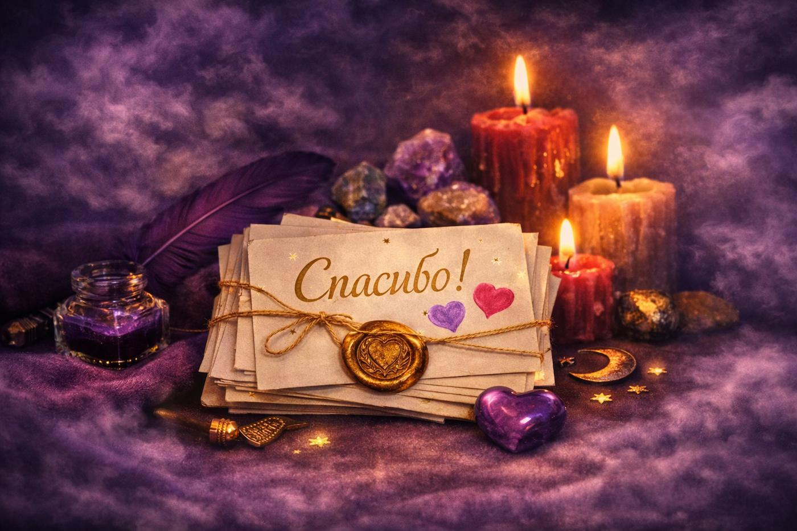
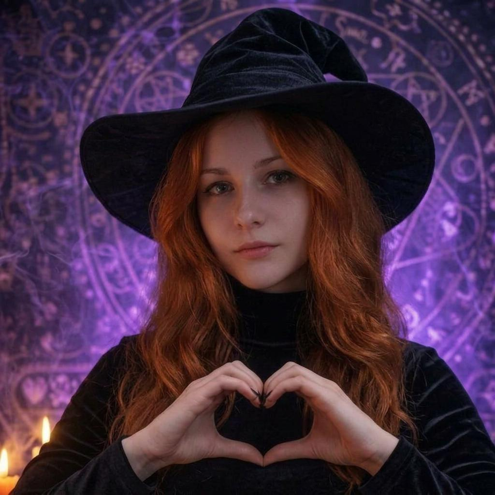

Таро, гадание онлайн и духовные консультации от Ирины
Место магии, силы и внутренней опоры.
Здесь собраны ритуалы, диагностики и практики, созданные для тех, кто ищет ответы, поддержку и перемены.
Об Ирине — практик

Ирина — практик с глубоким опытом и тонким чувством человека. Более 15 лет она работает с Таро, оракулами, рунами и мантическими системами, а также более 10 лет занимается ритуалистикой и энергетическими практиками.
Её работа основана на точности, внимательности и умении видеть то, что скрыто от обычного взгляда. Ирина помогает разобраться в сложных ситуациях, восстановить внутренний баланс, понять истинные причины происходящего и найти путь к изменениям.
К ней приходят, когда нужен не шаблонный ответ, а глубокий анализ, ясность и бережное сопровождение. Она работает с вопросами любви, финансов, отношений, удачи, самопознания и внутренними состояниями — там, где важны и опыт, и чувствование.
Каждая консультация — индивидуальная работа, основанная на профессионализме, уважении и честности. Ирина не даёт пустых обещаний: она помогает увидеть реальную картину и выбрать шаги, которые действительно меняют ситуацию.
- Более тысячи консультаций и успешных практик
- Клиенты из России, Беларуси, Казахстана и других стран
- Глубокая специализация: любовь, финансы, удача, самопознание, внутренние блоки
- Консультации на русском языке
Услуги – Таро, гадание онлайн и ритуалы
Стоимость услуг
Таро — консультации
1 вопрос 1 000 ₽
2–4 вопроса 2 500 ₽
Одна ситуация 3 500 ₽
Несколько сфер 6 000 ₽
Прогноз на месяц 1 500 ₽
Прогноз на 3 месяца 3 500 ₽
Прогноз на 6 месяцев 5 500 ₽
Оракул — ответы
1 вопрос 800 ₽
Руны — диагностика
1 вопрос 500 ₽
2–3 вопроса 1 000 ₽
Диагностика 1 500 ₽
Совет 500 ₽
Ритуалы — стоимость
Ритуалы по индивидуальному запросу от 5 000 ₽. Ирина проводит персональную работу, учитывая особенности ситуации клиента. Подробности предоставляются по запросу.
Любовный ритуал 25 000 ₽
Защита любовных отношений от 4 000 ₽
Любовный ритуал на змеиный выползок 25 500 ₽
Любовный ритуал через Пиковую Даму 16 600 ₽
Любовный ритуал «Лилит» 20 000 ₽
Морок на очарование от 5 000 ₽
Гармонизация отношений 15 000 ₽
Розжиг чувств от 6 600 ₽
Любовный вызов от 3 000 ₽
Ритуал «Печать богатства» 9 000 ₽
Открытие денежных путей 15 000 ₽
Повышение дохода от 5 000 ₽
Хорошая торговля от 9 000 ₽
Браслеты на приток денег от 3 000 ₽
Амулеты для дома от 1 500 ₽
Ритуал «Полная чаша» 16 000 ₽
Ритуал «Открытие дорог» 10 500 ₽
Ритуал «Коридор благополучия» 15 000 ₽
Привлечение удачи 5 500 ₽
Ритуал «Печать успеха» 5 500 ₽
Ритуал «Ясность желания» от 6 000 ₽
Ритуал «Воплощение желаний» от 3 000 ₽
Ритуал удачи 5 500 ₽
Защита от наведения негатива от 6 000 ₽
Защита от бытового негатива от 3 000 ₽
Защита от негатива в обществе от 7 000 ₽
Защита от неудач и препятствий 5 000 ₽
Защита финансового канала от 5 000 ₽
Универсальная мощная защита 8 000 ₽
Обереги для дома от 1 500 ₽
Защитные браслеты от 1 500 ₽
Защитные браслеты от 1 500 ₽
Ритуал «Повышение продуктивности» 4 000 ₽
Ритуал «Внутренняя сила» 8 000 ₽
Гармонизация пространства от 10 000 ₽
Ритуал «Выход из застоя» 5 000 ₽
Увеличение колдовского потенциала 16 660 ₽
Открытие потока знаний 16 660 ₽
Раскрытие дара от 7 000 ₽
Усиление интуиции от 5 000 ₽
Бутик — изделия
Магические изделия

Свечи
Любовные свечи от 2 900 ₽
Денежные свечи от 1 500 ₽
Свечи на удачу от 900 ₽
Свечи на успех от 900 ₽
Очищающие свечи от 1 500 ₽
Защитные свечи от 1 000 ₽
Уникальная свеча, созданная в потоке от 2 000 ₽
Программная свеча под индивидуальный запрос от 1 200 ₽
Амулеты
Любовные амулеты от 1 200 ₽
Денежные амулеты от 1 200 ₽
Амулеты на удачу от 1 200 ₽
Амулеты на успех от 1 200 ₽
Очищающие амулеты от 1 200 ₽
Защитные амулеты от 1 200 ₽
Отзывы клиентов

«Здравствуйте, Ирина, хороший ритуал, работает, главное соблюдать сказанные вами указания. Спасибо 🎃»
«Ирина, гадание на оракуле Ленорман, просто восхитительное! Все в точку было сказано, я в полном восторге. Разъясняете все великолепно, вопросов никаких не остается. Я уверена, что все будет именно так, как вы сказали. Каждое обращение к вам — это 100% точный ответ. Спасибо вам большое, вы самая лучшая ❤️❤️❤️❤️»
«Ирина, ещё раз хочу вас поблагодарить. Вы лучшая! Здоровья и мира Вам!»
Контакты и запись

Ирина отвечает лично и бережно относится к каждому обращению.
- Ответ в течение 1–3 часов
- Бережное и уважительное сопровождение
- Консультации на русском языке
Личные контакты Ирины
Написать Ирине в Telegram Связаться с Ириной в VK Ирина — Мессенджер МаксСообщество Ирины
Ирина — создатель нескольких сообществ, посвящённых Таро, магии и энергетическим практикам. Здесь вы найдёте материалы, обсуждения, поддержку и атмосферу волшебства.
- Обучающие материалы и ритуалы
- Обсуждения и советы
- Поддержка единомышленников